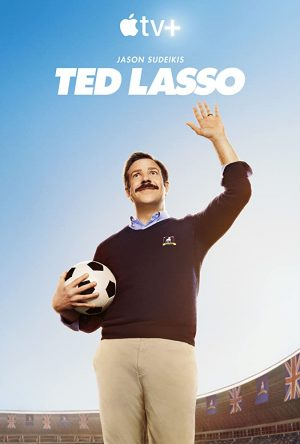

Ted Lasso Tanıtım
3 yorum | pirate | 20 Ağustos 2020 09:53 Apple TV+’ta 14 Ağustos’ta Ted Lasso isimli yeni bir komedi dizisi başladı. Söz konusu tarihte ilk 3 bölümüyle görücüye çıkan dizi, cuma günleri haftalık olarak yayınlanmaya devam edecek. İlk sezonu 10 bölümden oluşacak olan spor temalı komedi dizisi 2. sezon onayını da şimdiden cebine koydu.
Dizinin yaratıcıları Jason Sudeikis, Bill Lawrence, Brendan Hunt ve Joe Kelly. Yapımcı koltuğunda bu dörtlüye Jeff Ingold, Liza Katzer, Bill Wrubel ve Tina Pawlik gibi isimler eşlik ediyor.

Hikayemiz, sıradan bir kariyere sahip olan ABD vatandaşı bir Amerikan futbolu koçunun bir İngiltere Premier Lig futbol takımının başına teknik direktör olarak getirilmesiyle başlıyor. Söz konusu çiçeği burnunda teknik direktörümüz Ted Lasso, futbol hakkında doğru düzgün bir şey bilmiyor. Amerikan futbolu koçluğu kariyeri de pek parlak sayılmaz. 2. ligde sıradan bir kariyeri olmuş. Daha çok internette yayılan bir video dolayısıyla tanınmakta. Ted’in maç kazanma ve başarı elde etme üzerine bir hırsı olduğunu da söyleyemeyiz. Daha çok sporcularının kişisel gelişimlerine, birbirleriyle olan iletişimlerine ve takım birliğine odaklanan, disiplinden uzak bir tarzı var.
Peki, Ted Lasso’nun bu görevde ne işi var? Takımın taraftarlarının ve basının anlamlandıramadığı bu görevlendirmenin arkasında yatan sebep ne?
AFC Richmond isimli kulübün başkanı olan Rebecca Welton, bu görevi yeni boşandığı eşinden miras devralmış. Eski eşine büyük nefret duyan Rebecca, takımın Ted’in yönetiminde başarısızlıktan başarısızlığa koşacağına inanıyor ve bu durumun da takıma büyük değer verdiğini bildiği eski kocasını çıldırtacağına inanıyor.

Rebecca Welton karakterine Game of Thrones ve Krypton dizilerinden anımsanabilecek Hannah Waddingham hayat veriyor. Ted Lasso karakterini ise Jason Sudeikis canlandırıyor.
Yardımcı antrenör Beard rolünde Brendan Hunt karşımıza çıkıyor. Asabi takım kaptanı Roy Kent karakterinde Brett Goldstein karşımıza çıkıyor.
Takımın kibirli yıldız oyuncusu Jamie Tartt karakterini Phil Dunster canlandırıyor. Jamie’nin modellik yapan ve Ted ile iyi anlaşan çekici sevgilisi Keeley Jones karakterinde ise Dirty John ve Vinyl dizilerinden hatırlanabilecek Juno Temple‘ı izleme fırsatı yakalıyoruz.

Nick Mohammed ve Jeremy Swift gibi isimlerin de yer aldığı kadronun tamamına şuradan göz gezdirebilirsiniz.

Dizinin yayınlanan 3 bölümünü izlemiş bulunuyorum. Beklentiyi yüksek tutmamak kaydıyla başına oturduğunuz takdirde yeterince eğlenebileceğinizi düşünüyorum. Bu 3 bölümlük süreçte daha çok Hannah Waddingham’ı izlemekten keyif aldığımı söyleyebilirim. Juno Temple ve Jason Sudeikis de idare ediyorlar. Kadronun kalan kısmı ise yetersiz geldi şu an için bana.

Bu Yazıyı Sevdiyseniz, Şunlar Da Ilginizi Çekebilir:

Yorumlar:

S01E03
Özellikle bölümü izledikten sonra 2.sezon onayı almasına sevindim. 3.bölümle birlikte Roy, Nate, Keeley yan karakterleri daha da hoşuma gitti.
Eksileri; Lasso sinir bozucu bir şekilde iyi, saf bir karakter. Abartılar bazen ağır kaçıyor. Öyle gümbür gümbür güldürecek bir dizi değil, diğer tarzdaki komedilerden. Neden böyle bir teknik direktörü işe aldıklarına dair yan bir konu eklemeleri iyi olmuş, göze batıyordu.
Artıları: Jason Sudeikis, Amerikalıların futbol hakkında bilgileri hakkındaki yorumlar güzel, sonuçta futbol dizisi, Premiler Ligde geçen bir dizi bulmak kolay değil. Rakip takımların gerçek isimlerini kullanmaları da güzel. Cameo falan görür müyüz acaba, olsa çok güzel olur.
The Sun gazetesine hak ettiği değeri vererek giydirmeleri güzeldi. Bu arada Hannah Waddingham diziye çok güzel olmuş. 3.bölümde fotoğrafı göstermemelerini anlıyorum ama bari övmeseydiniz o kadar. Gerçekte olsa böyle kulüp başkanlarını bizim spor basınımız sürekli hatırlatırdı.
Juno Temple da yine kendine uyan bir rol bulmuş, eğlenceli bir karakter olmuş, sevdim.
S01E03
Özellikle bölümü izledikten sonra 2.sezon onayı almasına sevindim. 3.bölümle birlikte Roy, Nate, Keeley yan karakterleri daha da hoşuma gitti.
Eksileri; Lasso sinir bozucu bir şekilde iyi, saf bir karakter. Abartılar bazen ağır kaçıyor. Öyle gümbür gümbür güldürecek bir dizi değil, diğer tarzdaki komedilerden. Neden böyle bir teknik direktörü işe aldıklarına dair yan bir konu eklemeleri iyi olmuş, göze batıyordu.
Artıları: Jason Sudeikis, Amerikalıların futbol hakkında bilgileri hakkındaki yorumlar güzel, sonuçta futbol dizisi, Premiler Ligde geçen bir dizi bulmak kolay değil. Rakip takımların gerçek isimlerini kullanmaları da güzel. Cameo falan görür müyüz acaba, olsa çok güzel olur.
The Sun gazetesine hak ettiği değeri vererek giydirmeleri güzeldi. Bu arada Hannah Waddingham diziye çok güzel olmuş. 3.bölümde fotoğrafı göstermemelerini anlıyorum ama bari övmeseydiniz o kadar. Gerçekte olsa böyle kulüp başkanlarını bizim spor basınımız sürekli hatırlatırdı.
Juno Temple da yine kendine uyan bir rol bulmuş, eğlenceli bir karakter olmuş, sevdim.
S01E03
Özellikle bölümü izledikten sonra 2.sezon onayı almasına sevindim. 3.bölümle birlikte Roy, Nate, Keeley yan karakterleri daha da hoşuma gitti.
Eksileri; Lasso sinir bozucu bir şekilde iyi, saf bir karakter. Abartılar bazen ağır kaçıyor. Öyle gümbür gümbür güldürecek bir dizi değil, diğer tarzdaki komedilerden. Neden böyle bir teknik direktörü işe aldıklarına dair yan bir konu eklemeleri iyi olmuş, göze batıyordu.
Artıları: Jason Sudeikis, Amerikalıların futbol hakkında bilgileri hakkındaki yorumlar güzel, sonuçta futbol dizisi, Premiler Ligde geçen bir dizi bulmak kolay değil. Rakip takımların gerçek isimlerini kullanmaları da güzel. Cameo falan görür müyüz acaba, olsa çok güzel olur.
The Sun gazetesine hak ettiği değeri vererek giydirmeleri güzeldi. Bu arada Hannah Waddingham diziye çok güzel olmuş. 3.bölümde fotoğrafı göstermemelerini anlıyorum ama bari övmeseydiniz o kadar. Gerçekte olsa böyle kulüp başkanlarını bizim spor basınımız sürekli hatırlatırdı.
Juno Temple da yine kendine uyan bir rol bulmuş, eğlenceli bir karakter olmuş, sevdim.
{kind=link}
Kim ne demiş ayol ?